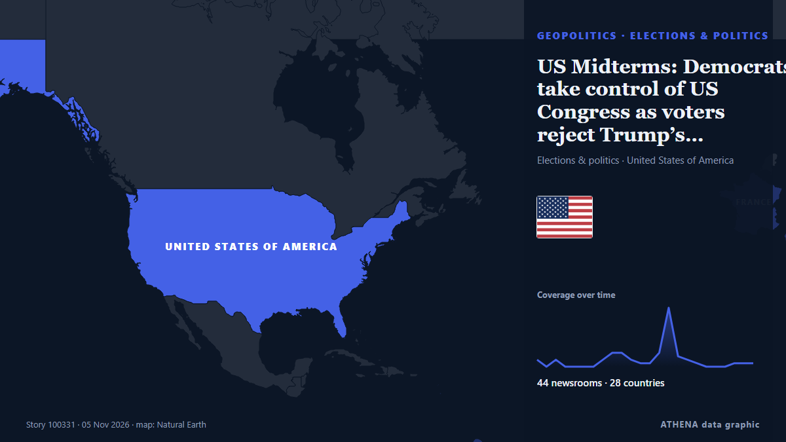

US Midterms: Democrats take control of US Congress as voters reject Trump’s Republicans

Democrats have taken control of both chambers of the United States Congress in the November 3, 2026, midterm elections, dealing a major political setback to President Donald Trump and his Republican… из Vanguard
Независимые источники: 44 издания в 28 странах, с 2 нояб.; первым сообщил Rappler; освещение на пике. ATHENA оценивает риск как умеренный (4.0/10), прежде всего из-за тяжести описываемого ущерба и географического и отраслевого охвата. Уверенность — 89 % (высокая); подтверждают независимые источники: 44 издания, средняя надёжность источников — 73 %. СМИ по странам: Индия (4), Турция (4), Сингапур (3). Освещение: с 2 нояб. по 4 нояб., 48 ч.
Почему это важно: События в сфере безопасности и дипломатии могут менять союзы, торговлю и рынки далеко за пределами непосредственно затронутых стран.
Что изменилось: 9 новых сообщений от 7 редакций за 24 часа до 5 нояб..
Первый заголовок: [Rappler’s Best] America, your turn
Заголовки приводятся на английском языке, как они были опубликованы.
Коротко в цифрах
Отобрано, оценено и написано по опубликованной методологии ATHENA. Ни один редактор не вмешивается в отдельные события. Как это создаётся ›
| 02 Nov 10:00 UTC | 2 |
|---|---|
| 02 Nov 13:00 UTC | 0 |
| 02 Nov 16:00 UTC | 2 |
| 02 Nov 19:00 UTC | 0 |
| 02 Nov 22:00 UTC | 0 |
| 03 Nov 01:00 UTC | 0 |
| 03 Nov 04:00 UTC | 0 |
| 03 Nov 07:00 UTC | 2 |
| 03 Nov 10:00 UTC | 4 |
| 03 Nov 13:00 UTC | 4 |
| 03 Nov 16:00 UTC | 2 |
| 03 Nov 19:00 UTC | 1 |
| 03 Nov 22:00 UTC | 1 |
| 04 Nov 01:00 UTC | 4 |
| 04 Nov 04:00 UTC | 17 |
| 04 Nov 07:00 UTC | 3 |
| 04 Nov 10:00 UTC | 2 |
| 04 Nov 13:00 UTC | 1 |
| 04 Nov 16:00 UTC | 0 |
| 04 Nov 19:00 UTC | 0 |
| 04 Nov 22:00 UTC | 0 |
| 05 Nov 01:00 UTC | 1 |
| 05 Nov 04:00 UTC | 1 |
| 05 Nov 07:00 UTC | 1 |
| 02 Nov 11:29 UTC | 0.0 |
|---|---|
| 03 Nov 14:44 UTC | 1.9 |
| 03 Nov 17:30 UTC | 3.9 |
| 05 Nov 00:51 UTC | 3.8 |
| 05 Nov 07:02 UTC | 4.0 |
Откуда эти цифры
Значимость
Риск
Уверенность
Освещение — кто сообщил и когда
заголовок в оригинале · открывает источник- Rappler · Филиппины[Rappler’s Best] America, your turn
- The Straits Times · Сингапур6 things to watch as US voters decide control of Congress
- Indian Express · ИндияUS midterms 2026: 5 key things to watch as American voters decide control of Congress
- Livemint · ИндияWhat are the Midterm elections? How to vote in these polls on November 3? Can overseas Americans participate? Explained
- Khaama Press · АфганистанUS Midterm Elections Put Control of Congress and Trump’s Agenda at Stake
- FXStreet · ИспанияUS midterms: The cost of living is now a pivotal issue
- CNBC World · Соединенные Штаты5 things to watch on Election Day as Democrats push for control of Congress
- BusinessWorld · ФилиппиныTrump faces midterm verdict with control of Congress at stake
- TRT World · ТурцияUS to decide new Congress composition on November 3
- CNA (Channel NewsAsia) · СингапурTrump faces midterm verdict with control of Congress at stake
- France 24 English · ФранцияWhat could happen if Donald Trump loses US midterm elections?
- TRT World · ТурцияUS midterms underway as voters weigh balance of power in Congress
- NDTV · ИндияHow Will Trump's Power Change If Midterms Go Against Him? Not Much
- Cyprus Mail · КипрTrump faces midterm verdict with control of Congress at stake
- The Korea Times · Республика КореяUS voters head to polls to deliver midterm verdict on Trump
- The Herald (Scotland) · ВеликобританияUS midterms: Trump's grip on Congress faces biggest test since returning to power
- Greek City Times · ГрецияTrump Faces Crucial Midterm Test as Americans Head to Polls
- The Business Times · СингапурUS midterm elections: Democrats surge toward control of Congress in setback for Trump
- The Hill · Соединенные ШтатыDemocrats seize House control from Republicans
- Gulf News · ОАЭUS midterm voters deliver brutal verdict on Trump
- Türkiye Today · ТурцияDemocrats seize US Senate, projected to retake House in major midterm blow to Trump
- eNCA · Южно-Африканская РеспубликаDemocrats win US House in growing midterms wave against Trump
- IOL · Южно-Африканская РеспубликаDemocrats win US House in growing midterms wave against Trump
- Scroll.in · ИндияUS midterm polls: Democrats take control of Congress from Trump’s Republican party
- to vima · ГрецияDemocrats Seize Control of Senate and House in US Midterms
- The New Arab · INTUS midterms: Democrats take control of Congress in blow to Trump
- PBS NewsHour · Соединенные ШтатыDemocrats take control of the Senate after winning key midterm races
- New Straits Times · МалайзияDemocrats seize US House, near Senate takeover in mauling for Trump's Republicans
- Arab News · Саудовская АравияDemocrats win US Senate, ending Republican dominance by harnessing voters’ frustration with Trump
- Belfast Telegraph · ВеликобританияDemocrats win control of US Congress in landslide as Trump branded ‘lame duck’
- Sydney Morning Herald · АвстралияDemocrats sweep to power at midterms in rejection of Trump, Republicans
- IOL · Южно-Африканская РеспубликаDemocrats seize control of US Congress in crushing blow to Trump
- The Guardian · ВеликобританияDemocrats win control of Senate as US voters reject Trump’s agenda
- The Daily Star — page reader · БангладешDemocrats win US Congress in midterm rout of Trump
- Ada Derana · Шри-ЛанкаDemocrats capture US Senate and House in major midterm election upset
- Vanguard · НигерияUS Midterms: Democrats take control of US Congress as voters reject Trump’s Republicans
- The Canadian Press (via CityNews) · КанадаDemocrats win U.S. Senate, ending Republican dominance by harnessing voters’ frustration with Trump
- TRT World · ТурцияDemocrats win control of both chambers of Congress in midterm rout, dealing blow to Republicans
- Punch · НигерияUS midterms: Democrats win control of Congress
- NL Times · НидерландыDemocrats win massively in U.S. Midterms; Americans in Netherlands overjoyed